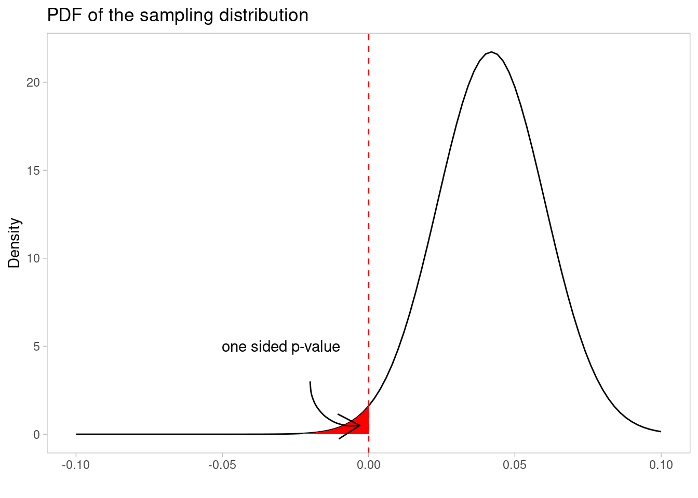
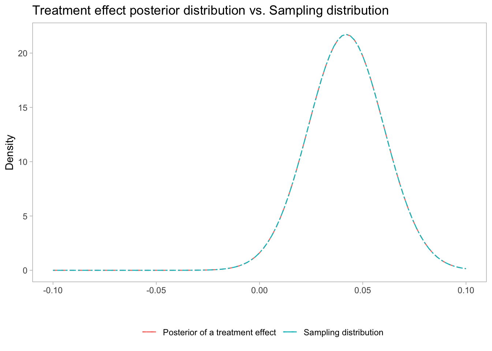

Can we stop bashing Bayesian A/B testing methods, please?
Bayesian vs. frequentist—“the never-ending debate”—is boring. It’s just math, after all. (Okay, there is also a fundamental disagreement on the definition of probability.) The answer to that debate is simple: an experienced data scientist/statistician should be able to use the tools from either domain, depending on the problem.
I spend a lot of time on online experiments. At WW, we have an in-house experimentation platform and so we don’t we rely on any of the vendors the space, but I find it helpful to keep up with the content produced by them. Lately, I’ve come across some gems.
Full Bayesian methods are about as useful for large-scale online experiments as a chemical dumpster fire. Bayesian methods offer a probability-based perspective, integrating prior knowledge and current data. If you make the wrong choice, like poorly selecting in the critical first step which statistical distribution you should set as your prior, your online experiment is going to be as slow as molasses.
Statistical guarantees are not as clearly defined and strongly depend on the appropriateness of the prior. […]
When to use Bayesian tests:
Whether to use a frequentist or Bayesian approach often boils down to preference, but here are some other subjective reasons:
[…] If you prefer having the ease of explaining results over the rigor of strong statistical guarantees.
After reading this, would any self-respective scientist or experimentation lead consider methods that do not provide strong statistical guarantees?
Finally, Ron Kohavi shared a note on LinkedIn in which he compares p-values to Bayes factors and points out that online Bayes calculators seem overly optimistic. The note and the thread are worth skimming through, but the overall conclusion also seems to lean towards “nope, Bayesian methods are not worth it.”
I don’t believe that it’s a fair assessment. Or, as XKCD put it:
Let’s dive in.
There’s no such thing as “Bayesian analysis” for A/B testing
First, let’s establish that there’s no single “Bayesian analysis.” This is the biggest gripe I have with Eppo’s post above. Comparing a frequentist group sequential test to “Bayesian analysis” is the same as comparing it to “machine learning.” Bayesian methods are a class of statistical methods; there’s no such thing as one “Bayesian approach.”
As a matter of fact, there’s such a thing as Bayesian Group Sequential Design. Surely, that would be a more appropriate comparison to a frequentist group sequential designs?
The Optimizely post that bashes Bayesian methods? It touts their “Stats Engine” and sequential procedure for always valid p-values derived from mixture sequential probability ratio tests (mSPRTs). Ironically, mSPRT relies on Bayesian statistics itself - it’s a procedure based on calculating likelihood ratios that requires choosing a “mixing distribution”. That mixing distribution happens to be nothing else but a Bayesian prior distribution!
We should be precise when we talk Bayesian methods for A/B testing. To my knowledge, the most popular approaches are:
Estimating posterior probability distributions of a treatment effect is the most “straightforward” Bayesian application to experiments. This procedure aims to quantify a simple estimand: “What is the probability that treatment is larger than 0?”
Some prefer quantifying a slightly different estimand: “What is the probability that A is better than B?”. This is often called “chance to beat” and differs from the abovementioned estimand when there is more than a single treatment.
The Optimizely post implicitly refers to an estimand popularized by Chris Stucchio at VWO: expected loss. This estimand combines Bayesian statistics and decision theory to quantify the cost of making a wrong decision and introduces decision rules minimize the expected loss in the long term.
Finally, some approaches use Bayes factors to derive estimands comparable to null hypothesis testing in the frequentist world and the ROPE (region of practical equivalence) procedure popularized by John Kruschke, which focuses on estimating the probability that the treatment effect falls within a predefined range of small values (values that we consider “practically equivalent” to zero effect). The latter is largely equivalent to “non-inferiority” testing procedures in frequentist paradigm.
All of the above are, effectively, different decision metrics. In frequentist approaches, you really have just one, as long as you stay in the null hypothesis testing realm (p-value/confidence intervals—which are just mirrors of each other). Then, on top, one can layer other things—so yes, you can have a Bayesian group sequential test or a Bayesian CUPED, or Bayesian IV model for useful in non-compliance scenarios, just like you can have them using frequentist approaches.
The fact that you can easily derive different decision metrics is one of the reasons I like Bayesian methods. It’s possible to get equivalents with frequentist methods, but it’s not easy. You can implement a Bayesian expected loss calculation with a few lines of code in a package like pyMC. In frequentist world - you probably need a statistics PhD and lots of painful derivations.
But I digress. The point is that if you want to compare Bayesian methods, you have to pick a method. You can’t just hand-wave and talk about “Bayesian analysis” and scaremonger everyone about how it’s all about the choice of priors and the subjectivity that results from it.
Coincidentally, that’s exactly what I want to go into detail next.
Is it all about priors?
Priors. They are guaranteed to be the first factor mentioned in any comparison of Bayesian and frequentist A/B testing methodologies. Quoting Optimizely:
Bayesian experiments are all about combining two sources of information: what you thought about the situation before you observed the data at hand, and the other is what the data themselves have to say about the situation.
The first source is expressed as a prior probability distribution. Prior means what you understood before you observed the data. The second source is expressed through the likelihood. The same likelihood is used in fixed-horizon, frequentist statistics.
Therefore, an experimenter starting with a good guess can reach a decision much faster compared to an experimenter using a frequentist method. However, if that initial guess was poorly chosen then the test can either take an extremely long time or yield very high error rates.
Or Eppo:
While all the above methods are frequentist in nature, Bayesian hypothesis testing involves forming a prior belief and then updating it with data to create a posterior. This approach can be difficult to compare with frequentist methods, as the underlying philosophy is quite different.
I won’t deny that Bayesian methods require setting priors—that would be stupid. However, the ability to use informative priors is just one of the key reasons for considering Bayesian methods. Somehow, the others are often forgotten in such comparisons.
First, it’s the ability to choose a different decision criterion. Have you ever felt the pain of explaining a business stakeholder what exactly a p-value is? Wrestled with questions like “Why is the experiment result statistically significant when its point estimate is smaller than the MDE we used when calculating the required sample?” Perhaps you concluded that NHST is a very unintuitive decision-making framework? I covered the most popular decision metrics above - and I would argue that each of them is more intuitive than using NHST.
Choosing a decision criterion becomes less about statistical shenanigans and more about quantifying risk. Any product manager will understand a statement: “There’s a 78% chance that A is better than B”. It’s very likely that, over time, they will ask - “hey, how come we only measure if A is better than B but do not take into account how much it’s better? Shouldn’t we do that?” And suddenly you’ll find yourself reaching for expected loss metrics - there’s a natural “progression” that you can apply as the organization matures.
Another beauty of Bayesian methods is uncertainty propagation enabled by the fact that all these procedures rely on posterior distributions.
Why is that helpful? Suppose you run a test on a pricing test on the website for a business operating a subscription model; you may want to evaluate the test not only based on conversion rates but also on expected cLTV (customer lifetime value). The trouble is, however, that cLTVs are estimates, and you may have different levels of confidence in the cLTVs at various pricing points. You have outputs from your machine learning model that quantify those uncertainties. For example, you may have 1000’s of customers who signed up for plans at $10/month for 3 months, and the cLTV estimates are very tight (95% confidence intervals are narrow), as you know exactly how customers retain after the third month. But what about a new plan at $5/month for 12 months that you never tried before? Your ML model will likely have much more uncertainty in the estimates (or at least it should!)
How do you incorporate the varying levels of uncertainty in the test? It’s undoubtedly possible with both frequentist and Bayesian approaches. However, a frequentist approach will (surprise!) require PhD-level derivations. The Bayesian version can be relatively quickly coded in your favorite package, e.g., pyMC.
Finally, Bayesian approaches easily lend themselves to hierarchical models, which enable pooling information across units and effectively apply shrinkage to your estimates, reducing the risk of false positives (to be fair, hierarchical models can be estimated using frequentist tools, too). Apple’s data science team recently published a paper on how they leverage hierarchical Bayesian models to run A/B tests showing how these approaches stack up against others, including mSPRT.
Yes, to do all that, you’ll need to set priors. But it’s not dark magic! If you run frequentist tests, you need assumptions, too. The argument that “if you set wrong priors, then…” is somewhat equivalent to saying, “if you choose a bad MDE when estimating required sample size, then…”. These are different assumptions, but they are still assumptions.
Besides, you can get quite far with uninformative priors.
What if you use uninformative priors?
Most articles on using Bayesian A/B testing will tell you that using uninformative priors is not a very good idea. I think that’s true - not using domain knowledge seems wasteful. However, I want to show that, as the very “toe dip in the water”, using them won’t result in a “chemical dumpster fire” as Optimizely would lead us to believe, nor we will have lots of issues with “statistical guarantees”. Also - fun fact - the Apple’s paper I linked above implies they use uninformative priors (\(\beta \sim N(0, 100)\)). So perhaps it’s not such a bad idea.
You probably have heard that using uninformative/flat priors gets you results similar to frequentist ones. This claim, in general, is not exactly true (see, e.g. Reid & Mukerjee, 2003 or, if you prefer entertaining reads, then Priors: Fire with Fire by Dan Simpson).
However, in the context of A/B testing, where we are in a straightforward univariate setting, it is very much true. Let me show you.
The Gaussian case
Let’s consider the following setup:
We’re interested in measuring the impact of a simple A/B test.
Our outcome metric happens to be normally distributed: \(Y_A \sim N(\mu_A, \sigma_A)\) and \(Y_B \sim N(\mu_B, \sigma_B)\). For simplicity, we will set \(\mu_a = 0, \sigma_A, \sigma_B = 1, \text { and } \mu_B = 0.05\).
Suppose we ran an experiment and collected 6,000 samples in each experiment arm (that’s 78% power, assuming we set MDE equal to the true unobservable population effect).
A quick t-test refresher
If we were to evaluate our results using a t-test, we would:
Then, enabled by CLT, we can claim that the difference of the means between the two groups is normally distributed (that distribution is referred to as the “sampling distribution”), with the following parameters:
Mean: \(\bar{Z} = \bar{Y_A} - \bar{Y_B}\)
Standard error: \(s_Z = \sqrt{\frac{s_A^2}{n_A} + \frac{s_B^2}{n_B}}\)
Finally, we calculate the test statistic \(t = \bar{Z} / s_Z\), and look up the associated CDF of the sampling distribution at that point (a.k.a p-value).
As a visual reminder - the p-value is twice the CDF of the sampling distribution in the range \([-\infty, 0]\) (twice, because we’re testing for a two-sided alternative hypothesis).

Mathematically, we don’t need to calculate the test statistic. We can get the CDF directly using the parameters of our sampling distribution.
#this is also a p-value!format(pnorm(0, mean = sdist$mean, sd = sdist$sd, lower.tail=T) *2, digits=4)
[1] "0.0224"
We can double-check using the built-in R functions.
t.test(B, A)
Welch Two Sample t-test
data: B and A
t = 2.2835, df = 11997, p-value = 0.02242
alternative hypothesis: true difference in means is not equal to 0
95 percent confidence interval:
0.00593807 0.07794067
sample estimates:
mean of x mean of y
0.033779917 -0.008159451
Great, we can conclude that, if our hypothesis of treatment having no effect were true, we would be observing a difference between two groups at least as as large as we did (we observed a difference of 0.041) roughly 2% of the time. Sounds rare enough that we could reject our null hypothesis and conclude that there indeed is a difference. We also conclude that the true effect should be somewhere between 0.005 and 0.078 95% of the time, if we were to repeat this experiment an infinity number of times. As for this particular run - well, it’s either inside that range or not. T-test (or frequentist approaches, more generally) don’t tell you anything about this particular experiment. Just long-term probabilities.
A mouthful. But hey, this isn’t a post about issues with null hypothesis testing. I wrote that one already.
A Bayesian approach
We will use the simplest estimand: the probability that the treatment is larger than 0.
Next, we will need uninformative priors. We can achieve that by choosing a normal distribution priors with variance approaching infinity (making any number in the real domain roughly equally likely), i.e.:\(Y_A, Y_B \sim N(0, 1/\tau)\), where \(\tau\) is some tiny number, e.g. 0.001. Note that we did not choose a prior for the treatment effect itself. Instead, we’re effectively saying that both experiment arms have the same mean and can take almost any values with the same likelihood.
However, we can see what kind of prior on the treatment effect our choice implies by leveraging the fact that a difference of two independent normal distributions is just another normal distribution:
\[
\text{if } X \sim N(\mu_x, s_x^2), Y \sim N(\mu_y, s_y^2)\, \text{ then } (X - Y) \sim N(\mu_x - \mu_y, s_x^2 + s_y^2)
\]
We can see that choosing a prior for experiment results of zero mean and \(\tau=0.001\) (or, equivalently, standard deviation of \(\sqrt(\frac{1}{0.001})=31.6\)) yields a prior on the treatment effect that also has a zero mean but has even more uncertainty, with standard deviation of \(44.7\).
Next, we need to get to posterior distributions. Luckily, a normal prior and a normal likelihood form a conjugate pair that yields a normal posterior distribution, so we can do this algebraically. Specifically, suppose the prior distribution is \(P_0 \sim N(\mu_0, \tau_0^{-1})\), the observed mean is \(\bar{X}\) and observed precision is \(\bar{\tau} = \frac{1}{s^2_x}\). Then the posterior is \(P \sim N \left(\frac{\tau_0 \mu_0+\bar{\tau} * \bar{X} * n}{\tau_0+ n \tau},\left(\tau_0+n \tau\right)^{-1}\right)\). Let’s calculate the posteriors for our samples.
We have posterior distributions for the data of the two samples, but we are after the treatment effect - i.e., the difference between the two samples. We can use the same approach as previously and calculate it, as the two posteriors can be assumed to be independent, too.
treatment_posterior =difference_of_two_normals(B_posterior, A_posterior)treatment_posterior |>as_tibble() |>pivot_longer(everything(), names_to ='statistic') |>kbl(caption='Posterior distribution of the treatment effect') |>kable_minimal(full_width = T, position='left')
That looks familiar! Let’s overlay the sampling distribution from the t-test:
ggplot() +geom_function(fun = dnorm, args =within(treatment_posterior, rm("tau")),aes(color ='Posterior of a treatment effect'),linetype='dashed') +xlim(-0.1, 0.1) +geom_function(fun = dnorm, args = sdist,aes(color ='Sampling distribution'),linetype='twodash') +xlab("") +ggtitle("Treatment effect posterior distribution vs. Sampling distribution") +ylab("Density") +labs(color='') +theme_light() +theme(panel.grid=element_blank(), legend.position='bottom')

They are identical! This means that the probability of the treatment effect being smaller than zero is—you guessed it—equal to 1/2 of a two-sided p-value—or, in other words, identical to the one-sided p-value.
This is no coincidence. We can prove that mathematically. Here’s the posterior formula again:
\[
P \sim N \left(\frac{\tau_0 \mu_0+\bar{\tau} * \bar{X} * n}{\tau_0+ n \tau},\left(\tau_0+n \tau\right)^{-1}\right)
\]
Now, if we let the prior variance go to infinity, the \(\tau_0\) term goes to zero. In that case, the posterior simplifies to:
\[
P \sim N \left(\bar{X},\left(n \tau\right)^{-1}\right)
\]
We can plug it into the formula for calculating the difference between two normal distributions:
What we get is precisely the sampling distribution used in the frequentist t-test.
So, no, it’s not true that using uninformative priors will yield rubbish results. You are not forced to use subjective priors, opening yourself to the risk of mispecifying them.
In fact, you’ll get precisely the same results as a one-sided p-value, which also means you have the same statistical guarantees. If your decision criterion is to look at experiment results once and adopt the treatment when the probability that it is above zero is 95% or more (and thus the probability it’s below zero is 5% or less), you will be right 95% of the time, just like you would if you were to rely on p-values and statistical significance.
(This result also makes me wonder if all those people arguing for one-sided tests were right, but that’s for another time.)
A non-Gaussian case
You may rightfully wonder if the above result extends to non-Gaussian situations. I can’t prove it mathematically, but numerical simulations tell me the answer is yes. Let’s consider the most popular A/B testing situation involving binary outcomes (e.g., conversion rates).
Our outcome metric follows the Bernoulli distribution: \(X \sim \text{Bernoulli}(p)\). Because the individual user observations are independent, we can interpret the entire sample with \(n\) observations and \(k\) successes as a binomial distribution with rate \(p\).
We will use uninformative beta distribution priors \(P_0 \sim \text{Beta}(\alpha_0=1,\beta_0=1)\)
The posterior of a beta prior and binomial likelihood is another conjugate pair, resulting in a beta distribution with parameters \(\alpha=\alpha_0 + k, \beta = \beta_0 + (n - k)\).
We will also need to be able to calculate a difference between two random variables following Beta distributions. A closed-form solution exists to calculate this difference, but it involves Appell F1 hypergeometric functions that I couldn’t get to work with large \(n\). So instead, we will rely on the fact that a sum / difference of two independent PDFs can be calculated using convolutions.
Let’s generate some data. We’ll use a baseline of \(0.17\), an effect size of \(0.02\), and a group size of 6,000, which should yield us ~80% power.
Two-sample comparison of proportions power calculation
n = 6000
p1 = 0.17
p2 = 0.19
sig.level = 0.05
power = 0.8137145
alternative = two.sided
NOTE: n is number in *each* group
Let’s define a couple of helper functions.
get_samples =function(n_group, baseline, eff) {list(A =rbinom(n_group, 1, baseline),B =rbinom(n_group, 1, baseline + eff) )}calculate_beta_posterior =function(X, prior){list(alpha = prior$alpha +sum(X),beta = prior$beta + (length(X) -sum(X)) )}#calculate density at a given point X for the difference between two beta distributionspdf_beta_diff =function(X, d1, d2) {sapply(X, function(t) {integrate(function(i) { (dbeta(i, d1$alpha, d1$beta) *dbeta(i-t, d2$alpha, d2$beta) +dbeta(i, d2$alpha, d2$beta) *dbeta(i+t, d1$alpha, d1$beta)) /2 }, lower=-Inf, upper=Inf, stop.on.error = F)$value })}#calculate a total CDF between X and Y for two beta distributionscdf_beta_diff =function(X, Y, d1, d2) {integrate(pdf_beta_diff, d1, d2, lower=X, upper=Y, stop.on.error = F)$value}
Now, let’s draw one sample and do the calculations.
set.seed(42)data =get_samples(n_group, baseline, eff)sdist =sampling_distribution(data$B, data$A)sdist |>as_tibble() |>pivot_longer(everything(), names_to ="statistic") |>kbl(caption='Summary statistics of the sampling distribution') |>kable_minimal(full_width = T, position='left')
I hope that’s convincing. It has some funny implications, too. All those difficulties with interpreting p-values? A p-value is not a measure for evidence, etc.? Well, I think I have proven to myself (and hopefully, you, too) that if we are willing to assume that we are equally likely to observe data of any value, then under our very simple and restrictive setting of two independent samples with data generating process following Normal distribution (or distribution that converges to Normal, such as Beta):
A one-sided p-value is equal to the probability that the treatment is negative;
(1 - p-value) is equal to the probability that the treatment is positive (gasp!)
In other words, we can all run t-tests and report p-values as probabilities of treatment effects. No more worrying about explaining statistical significance!
Sure, I am joking. Or am I? The math is pretty convincing.
One good reason not to do that is because the assumption of flat priors is pretty stupid. If you’re running conversion tests on a website, surely you know better than to say, “Ah, it can be anything, really.” So maybe that’s the answer to the people who want to misinterpret p-values as measures of evidence—“Yes, it’s a probability of treatment being better/worse, but only if you’re assuming our conversion rates can be anything.”
Wrapping up
That’s it for this post. I hope it’s easier to believe that Bayesian methods are not chemical dumpster fire, unlike Optimizely wants you to believe. I also hope that it’s clear why a comparison of a specific frequentist procedure (such as a sequential test) to the abstract concept of Bayesian methods doesn’t make much sense. It’s like comparing Fuji apples and vegetables. Furthermore, I hope I’ve shown why Bayesian methods are not “just about priors and injecting subjectivity.” The other benefits — the choice of different decision metrics and the ability to propagate uncertainty — can be strong enough reasons alone to consider them.
This entire post also used very “simple maths”. No MCMC and computationally expensive procedures where required. That’s another misconception that often comes up - it’s true that Bayesian estimation procedures are more computationally taxing, but in the case of A/B testing, that only becomes relevant when you enter the territory of hierarchical models or use covariates (CUPED-like setups). Conjugate distribution pairs can get you quite far - in fact, LaunchDarkly, one of the vendors in the space, seems to be using them exclusively to estimate experiment results.
Finally, we saw that, with uninformative priors, a Bayesian estimand of a probability of treatment effect above zero is equivalent to outputs of a frequentist t-test. It’s both a good and a bad thing. It’s good because it’s nice to see how the two approaches converge. It also gives us a probabilistic p-value interpretation that most business stakeholders would understand more intuitively. The bad thing, however, is that it only happens under very unrealistic assumptions of prior distributions, and in practice, you should probably refrain from using them.
That leads to the world of informative priors. That must be where the dumpster fire starts, experiments run as slow as molasses, and all statistical guarantees disappear. Up for part 2?